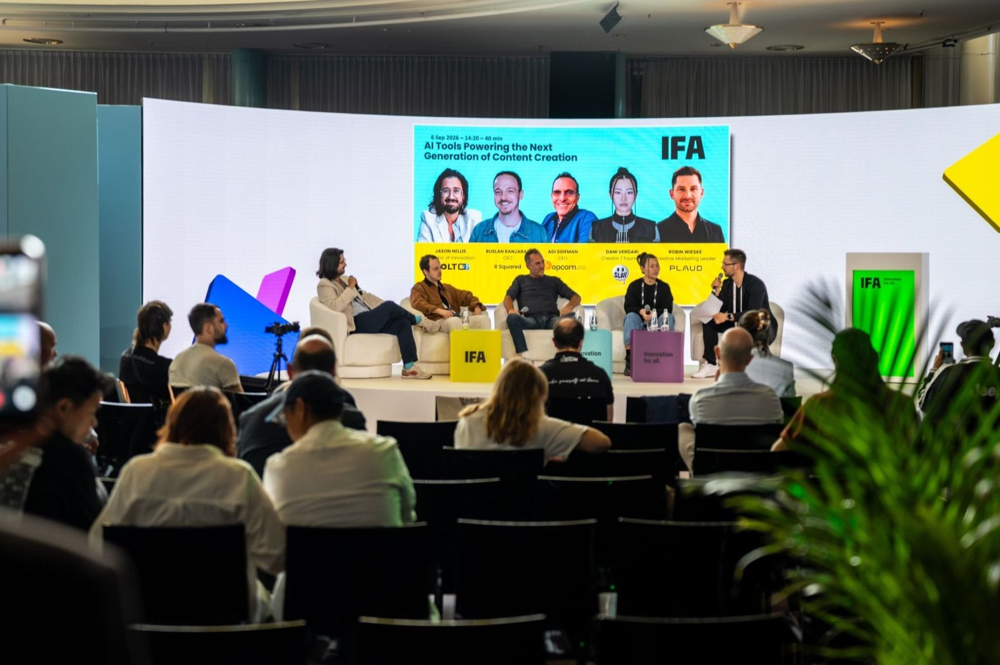
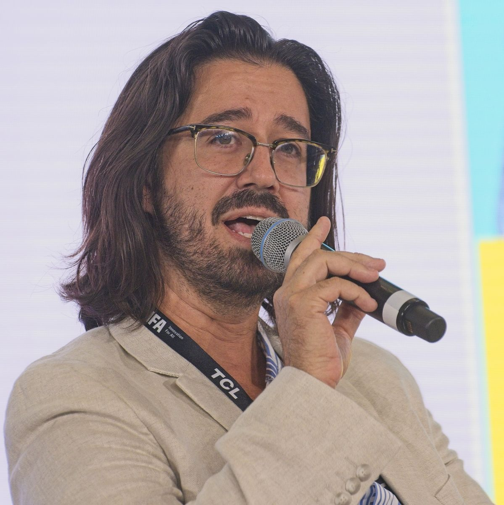
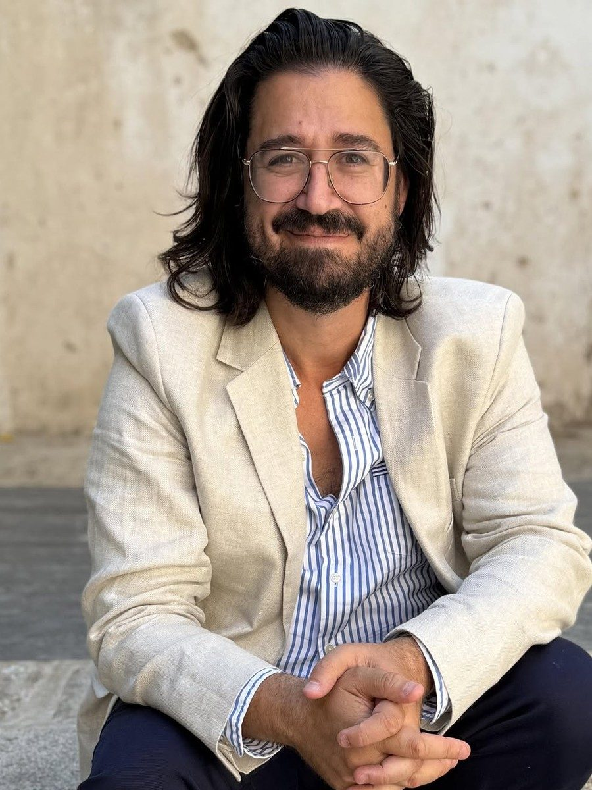

Everything an organizer needs, in one place.
Bios, headshots, an intro script for your MC, AV needs and a one-pager for anyone booking Jason for a talk, a panel or a fireside.

Speaker reel
Headshots




The square shot fits speaker cards and social tiles. The portrait suits program books and press. Use either to promote a confirmed booking.
Short bio
Jason Nellis is a product and go-to-market executive in media and the creator economy. He started at Hulu in the early days of streaming, then co-founded Packagd, which Meta acquired and where his team launched Facebook Live Shopping. He has been a chief product officer and an interim CEO, and now leads innovation and go-to-market at BoltOS. He lives near Cannes, France.
Long bio
Jason Nellis has spent nearly twenty years building products and businesses in media and the creator economy.
He started at Hulu in the early years of streaming, first in technology and then as a content partner manager, running content strategy for partners from the White House to NBCUniversal and Comcast. Hulu taught him that how content is packaged matters as much as the content.
He then co-founded Packagd, built on the bet that creators were generating more value than they captured. Meta acquired Packagd in 2019. There his team built Facebook Live Shopping, a gift-certificate program that helped small businesses take payments during the pandemic, and Super, a live creator platform that hosted VidCon's weekly interviews through COVID.
He was chief product officer at Jogg and at SuperBam, an IP and video rights company, where he also served as interim CEO. He now leads innovation and go-to-market at BoltOS. He has guest-lectured at Northwestern, Howard and Georgetown, hosts the Building Value podcast, and has spoken on stages across Europe. He lives near Cannes, France.
Introduction script
Our next speaker has spent nearly twenty years building in media and the creator economy. He's built companies, sold one to Meta, and helped launch products used by millions of people.
He started at Hulu in the early days of streaming, managing content partnerships for accounts from the White House to NBCUniversal. Then he co-founded Packagd, which Meta acquired in 2019. At Meta his team built Facebook Live Shopping, a pandemic program that helped small businesses sell gift certificates, and a creator platform that hosted VidCon's interviews through COVID.
Since then he's been a chief product officer and an interim CEO, and today he leads innovation and go-to-market at BoltOS. He's guest-lectured at Northwestern, Howard and Georgetown, and he hosts Building Value, a podcast with more than a hundred creator conversations.
Please welcome Jason Nellis.
AV requirements
On stage
- Projection screen or large display, 16:9 preferred
- Presenter remote
- Slides in Keynote or PowerPoint
- Lavalier mic preferred, handheld is fine
- Confidence monitor for speaker notes, if you have one
Remote
Available for virtual and hybrid formats, on a stable broadband connection from France. Jason is on Central European Time, six hours ahead of New York, so plan North American sessions for his afternoon.
Language
Jason speaks in English. If English isn't your audience's first language, please book a professional interpreter and confirm it at least two weeks ahead.
One-page summary
Jason Nellis · Product & GTM Executive · Speaker
jasonnellis.com · Speaking inquiries via the contact form
About
Product and go-to-market executive in media and the creator economy since 2008. Started at Hulu. Co-founded Packagd, acquired by Meta in 2019. Chief product officer at Jogg and SuperBam, and interim CEO at SuperBam. Head of Innovation & GTM at BoltOS. Based near Cannes, France.
Talks
Your AI Strategy Is Probably Theater. Most organizations have an AI strategy that's really a press release.
The Media Cycle No One Believes Is a Cycle. Every wave looks like a revolution from the inside, until you've lived through three of them.
Why Some Creators Break Through and Most Don't. After 100+ conversations with creators on Building Value, the same few patterns keep showing up.
Formats
Keynote, panel, moderator or MC, fireside chat, workshop, podcast, guest lecture
Logistics
MIPCOM, MIPTV and Cannes Lions are local. Jason travels for the rest of Europe and North America.
Speaking experience
- Guest lecturer at Northwestern, Howard and Georgetown
- Conference stages including IFA Berlin, Latitude59 in Tallinn, ZEST in Malta and PAKCon in Berlin
- Host of 50+ creator interviews for VidCon on Meta's Super
- Host of Building Value, 100+ creator conversations, relaunching Q4 2026
- Internal speaker at Meta, including the Meta Games Day live broadcast